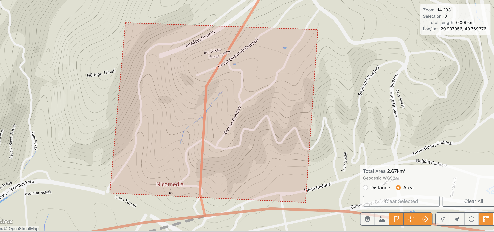

山城、城墙与海湾
海港在南，城区沿山坡向北展开。城墙下方是营地；清真寺、浴场和驻军堡垒集中在南缘。
地面来自 Mapzen / AWS Terrain Tiles 的 Terrarium 高程瓦片，按米建立网格，垂直比例 1∶1。三处建筑周围作局部台地整平。海岸参照现代 OpenStreetMap 岸线作简化，省去现代突堤；1422年的滩地、淤积和填海差异尚未复原。
清真寺与浴场的定位参考 清真寺建筑轮廓、浴场建筑轮廓。清真寺模型中心为40.768501° N、29.919695° E；浴场为40.766990° N、29.920699° E。地图数据 © OpenStreetMap contributors，ODbL。
清真寺：土耳其文化旅游部资料将 Orhan Camii 与 Gazi Süleyman Paşa Camii 列为同一座建筑。现存地图轮廓面积约440平方米，最小外接矩形为18.4 × 29.1米。模型按此长宽安排礼拜堂和门廊，院落另计。
大浴场：现存地图轮廓面积约363平方米，最小外接矩形为18.6 × 21.1米。模型保留双浴室、大小穹顶与烟囱，并使用相同米制尺度。两组尺寸来自现代地图轮廓估算；高度和1422年外观按体量复原。
堡垒：按小说复原为100 × 86米的驻军石堡，中心约40.765989° N、29.918634° E。它在主城门西侧的城墙内，最近的接墙端距主门约70米，南侧堡墙接入南城墙；北侧堡门通过城内短路连接主路。这是小说选址，不是Karaburç遗址定位。
读取作家助手第二卷第120、122、123章草稿：港口上岸后经过城外营地；石堡与城墙相连、守卫城门；军队巡逻城墙与街道；民兵住在偏门附近的大浴场。城内约四百户来自本地第53章。
按你最新的现代地图，把城墙改为1,630 × 1,630米、约2.66平方公里，南边略向东南倾斜。橙色路线按图中itiner-e的Nicomedia–Artanes路线坐标校正；主城门位于其与南墙的交点，距南边中点约38米。堡垒在主门西侧城内，营地在城外、主路东侧。城墙四角与完整建筑形态为小说复原。
用图中的Nicomedia地点与南侧道路交会处对齐地理位置，并以你指定的约1.63公里边长归整城墙。截图面积为2.67平方公里；模型采用2.6569平方公里。截图红线是本次小说城墙范围的依据。
